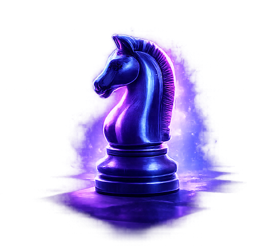

L’imprévisible stratège.

Le cavalier est une pièce tactique capable de surprendre l’adversaire.
Il se déplace en forme de L : deux cases dans une direction, puis une perpendiculairement.
Il peut sauter par-dessus les autres pièces, ce qui le rend unique.
Les cavaliers sont très efficaces dans les positions fermées. Placé au centre, il contrôle jusqu’à 8 cases.